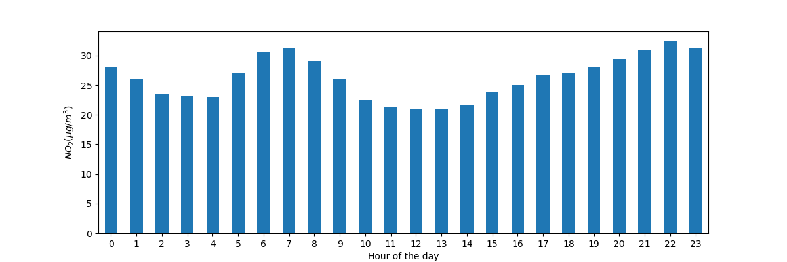
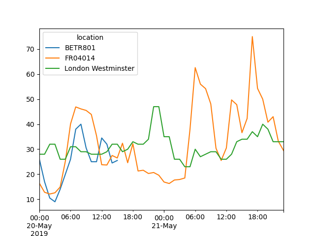
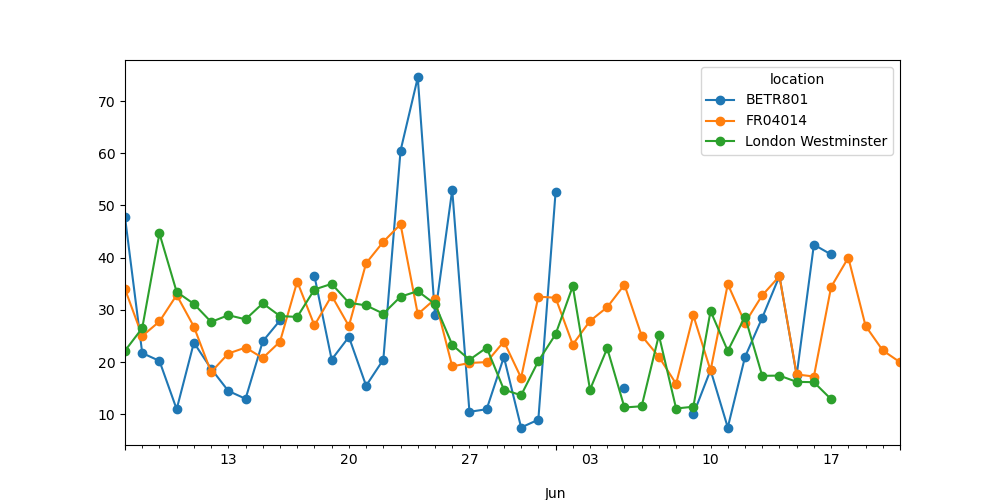

In [1]: import pandas as pd
In [2]: import matplotlib.pyplot as plt
-
空气质量数据
In [3]: air_quality = pd.read_csv("data/air_quality_no2_long.csv") In [4]: air_quality = air_quality.rename(columns={"date.utc": "datetime"}) In [5]: air_quality.head() Out[5]: city country datetime location parameter value unit 0 Paris FR 2019-06-21 00:00:00+00:00 FR04014 no2 20.0 µg/m³ 1 Paris FR 2019-06-20 23:00:00+00:00 FR04014 no2 21.8 µg/m³ 2 Paris FR 2019-06-20 22:00:00+00:00 FR04014 no2 26.5 µg/m³ 3 Paris FR 2019-06-20 21:00:00+00:00 FR04014 no2 24.9 µg/m³ 4 Paris FR 2019-06-20 20:00:00+00:00 FR04014 no2 21.4 µg/m³
In [6]: air_quality.city.unique() Out[6]: array(['Paris', 'Antwerpen', 'London'], dtype=object)
如何轻松处理时间序列数据#
使用 pandas 日期时间属性#
我想将
datetime列中的日期作为日期时间对象而不是纯文本来处理In [7]: air_quality["datetime"] = pd.to_datetime(air_quality["datetime"]) In [8]: air_quality["datetime"] Out[8]: 0 2019-06-21 00:00:00+00:00 1 2019-06-20 23:00:00+00:00 2 2019-06-20 22:00:00+00:00 3 2019-06-20 21:00:00+00:00 4 2019-06-20 20:00:00+00:00 ... 2063 2019-05-07 06:00:00+00:00 2064 2019-05-07 04:00:00+00:00 2065 2019-05-07 03:00:00+00:00 2066 2019-05-07 02:00:00+00:00 2067 2019-05-07 01:00:00+00:00 Name: datetime, Length: 2068, dtype: datetime64[ns, UTC]
最初，
datetime中的值是字符串，不提供任何日期时间操作（例如，提取年份、星期几等）。通过应用to_datetime函数，pandas 会解释这些字符串并将其转换为日期时间（即datetime64[ns, UTC]）对象。在 pandas 中，我们将这些日期时间对象称为pandas.Timestamp，类似于标准库中的datetime.datetime。
注意
由于许多数据集的列中包含日期时间信息，pandas 的输入函数如 pandas.read_csv() 和 pandas.read_json() 可以在读取数据时，使用 parse_dates 参数（提供要作为 Timestamp 读取的列列表）来完成日期的转换。
pd.read_csv("../data/air_quality_no2_long.csv", parse_dates=["datetime"])
为什么这些 pandas.Timestamp 对象很有用？让我们通过一些示例来 H 说明其附加价值。
我们正在处理的时间序列数据集的开始和结束日期是什么？
In [9]: air_quality["datetime"].min(), air_quality["datetime"].max()
Out[9]:
(Timestamp('2019-05-07 01:00:00+0000', tz='UTC'),
Timestamp('2019-06-21 00:00:00+0000', tz='UTC'))
使用 pandas.Timestamp 处理日期时间使我们能够使用日期信息进行计算并使其具有可比性。因此，我们可以用它来获取时间序列的长度
In [10]: air_quality["datetime"].max() - air_quality["datetime"].min()
Out[10]: Timedelta('44 days 23:00:00')
结果是一个 pandas.Timedelta 对象，类似于标准 Python 库中的 datetime.timedelta，它定义了一个时间持续期。
pandas 支持的各种时间概念在用户指南的 时间相关概念 部分进行了解释。
我想向
DataFrame添加一个新列，其中只包含测量月份In [11]: air_quality["month"] = air_quality["datetime"].dt.month In [12]: air_quality.head() Out[12]: city country datetime ... value unit month 0 Paris FR 2019-06-21 00:00:00+00:00 ... 20.0 µg/m³ 6 1 Paris FR 2019-06-20 23:00:00+00:00 ... 21.8 µg/m³ 6 2 Paris FR 2019-06-20 22:00:00+00:00 ... 26.5 µg/m³ 6 3 Paris FR 2019-06-20 21:00:00+00:00 ... 24.9 µg/m³ 6 4 Paris FR 2019-06-20 20:00:00+00:00 ... 21.4 µg/m³ 6 [5 rows x 8 columns]
通过对日期使用
Timestamp对象，pandas 提供了许多时间相关属性。例如month，还有year、quarter等。所有这些属性都可以通过dt访问器访问。
现有日期属性的概述在时间和日期组件概览表中给出。关于 dt 访问器返回日期时间类属性的更多详细信息在dt 访问器的专门章节中进行了解释。
每个测量地点每周每一天的平均 \(NO_2\) 浓度是多少？
In [13]: air_quality.groupby( ....: [air_quality["datetime"].dt.weekday, "location"])["value"].mean() ....: Out[13]: datetime location 0 BETR801 27.875000 FR04014 24.856250 London Westminster 23.969697 1 BETR801 22.214286 FR04014 30.999359 ... 5 FR04014 25.266154 London Westminster 24.977612 6 BETR801 21.896552 FR04014 23.274306 London Westminster 24.859155 Name: value, Length: 21, dtype: float64
还记得统计计算教程中
groupby提供的“拆分-应用-合并”模式吗？在这里，我们希望计算给定统计量（例如平均 \(NO_2\)）**对于每周的每一天**以及**对于每个测量地点**。为了按工作日分组，我们使用 pandasTimestamp的日期时间属性weekday（其中星期一=0，星期日=6），该属性也可以通过dt访问器访问。对位置和工作日进行分组可以拆分这些组合的平均值计算。警告
由于这些示例中我们处理的是非常短的时间序列，因此分析结果不具有长期代表性！
绘制我们时间序列中所有站点在一天内的典型 \(NO_2\) 模式。换句话说，一天中每个小时的平均值是多少？
In [14]: fig, axs = plt.subplots(figsize=(12, 4)) In [15]: air_quality.groupby(air_quality["datetime"].dt.hour)["value"].mean().plot( ....: kind='bar', rot=0, ax=axs ....: ) ....: Out[15]: <Axes: xlabel='datetime'> In [16]: plt.xlabel("Hour of the day"); # custom x label using Matplotlib In [17]: plt.ylabel("$NO_2 (µg/m^3)$");
与上一个案例类似，我们希望计算给定统计量（例如平均 \(NO_2\)）**对于一天中的每个小时**，并且我们可以再次使用“拆分-应用-合并”方法。对于这种情况，我们使用 pandas
Timestamp的日期时间属性hour，该属性也可以通过dt访问器访问。
日期时间作为索引#
在重塑教程中，介绍了 pivot() 用于重塑数据表，将每个测量位置作为单独的列
In [18]: no_2 = air_quality.pivot(index="datetime", columns="location", values="value")
In [19]: no_2.head()
Out[19]:
location BETR801 FR04014 London Westminster
datetime
2019-05-07 01:00:00+00:00 50.5 25.0 23.0
2019-05-07 02:00:00+00:00 45.0 27.7 19.0
2019-05-07 03:00:00+00:00 NaN 50.4 19.0
2019-05-07 04:00:00+00:00 NaN 61.9 16.0
2019-05-07 05:00:00+00:00 NaN 72.4 NaN
注意
通过透视数据，日期时间信息成为表格的索引。通常，通过 set_index 函数可以将列设置为索引。
使用日期时间索引（即 DatetimeIndex）提供了强大的功能。例如，我们不需要 dt 访问器来获取时间序列属性，而是可以直接在索引上使用这些属性
In [20]: no_2.index.year, no_2.index.weekday
Out[20]:
(Index([2019, 2019, 2019, 2019, 2019, 2019, 2019, 2019, 2019, 2019,
...
2019, 2019, 2019, 2019, 2019, 2019, 2019, 2019, 2019, 2019],
dtype='int32', name='datetime', length=1033),
Index([1, 1, 1, 1, 1, 1, 1, 1, 1, 1,
...
3, 3, 3, 3, 3, 3, 3, 3, 3, 4],
dtype='int32', name='datetime', length=1033))
其他一些优势包括方便的时间段子集选择或图表上调整的时间刻度。让我们将其应用于我们的数据。
绘制从 5 月 20 日到 5 月 21 日末不同站点的 \(NO_2\) 值图表
In [21]: no_2["2019-05-20":"2019-05-21"].plot();
通过提供一个**可解析为日期时间的字符串**，可以在
DatetimeIndex上选择数据的特定子集。
关于 DatetimeIndex 和使用字符串进行切片的更多信息，请参阅时间序列索引一节。
将时间序列重新采样到另一个频率#
将当前的每小时时间序列值聚合为每个站点的每月最大值。
In [22]: monthly_max = no_2.resample("ME").max() In [23]: monthly_max Out[23]: location BETR801 FR04014 London Westminster datetime 2019-05-31 00:00:00+00:00 74.5 97.0 97.0 2019-06-30 00:00:00+00:00 52.5 84.7 52.0
对带有日期时间索引的时间序列数据来说，一个非常强大的方法是能够将时间序列
resample()到另一个频率（例如，将秒级数据转换为 5 分钟级数据）。
resample() 方法类似于 groupby 操作
它通过使用定义目标频率的字符串（例如
M、5H等）提供基于时间的聚合它需要一个聚合函数，例如
mean、max等。
用于定义时间序列频率的别名概述在偏移别名概览表中给出。
定义后，时间序列的频率由 freq 属性提供
In [24]: monthly_max.index.freq
Out[24]: <MonthEnd>
绘制每个站点的每日平均 \(NO_2\) 值图表。
In [25]: no_2.resample("D").mean().plot(style="-o", figsize=(10, 5));
关于时间序列 resampling 强大功能的更多详细信息在用户指南的重采样部分提供。
记住
有效的日期字符串可以使用
to_datetime函数或作为读取函数的一部分转换为日期时间对象。pandas 中的日期时间对象支持计算、逻辑操作以及使用
dt访问器访问的便捷日期相关属性。一个
DatetimeIndex包含这些日期相关属性并支持便捷的切片。Resample是一个强大的方法，用于改变时间序列的频率。
关于时间序列的完整概述，请参见时间序列和日期功能页面。